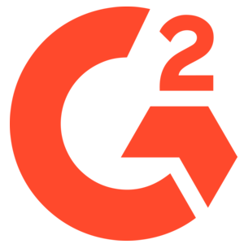
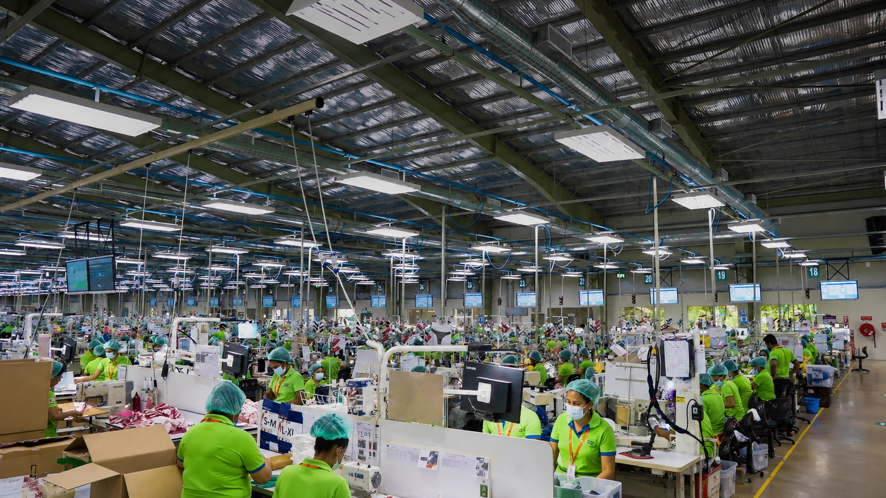

The HR teams that
run on PeoplesHR
From manufacturing floors in Sri Lanka to telecom operations in the Philippines, PeoplesHR powers the people function for 1,700+ organizations across Asia.

4.3/5 (81 reviews)